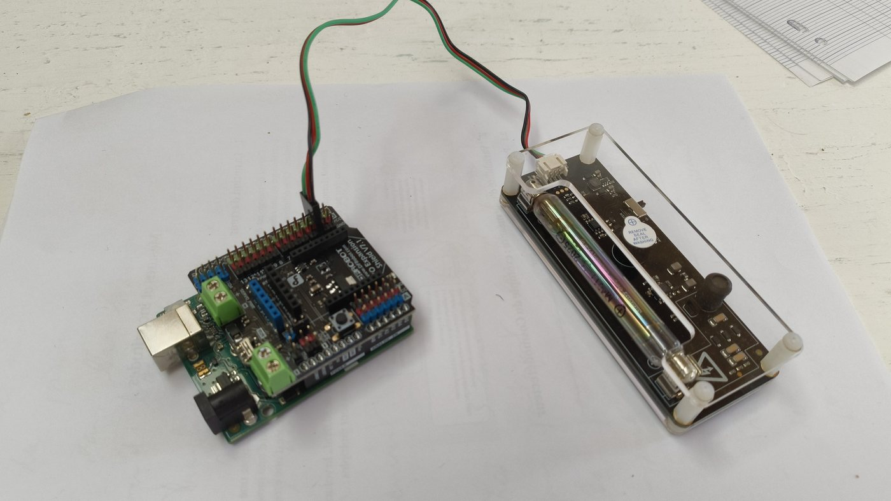

Le potassium 40, une source idéale
Pour se passer de sources radioactives trop actives et interdites en classe, toutes les expériences utilisent le potassium 40, présent à l’état de traces dans le potassium naturel (environ un dix-millième). Un simple sel du laboratoire de chimie suffit : thiocyanate de potassium KSCN en poudre, ou chlorure de potassium KCl.
Le potassium 40 est responsable de plus de la moitié de la radioactivité du corps humain : environ quatre à cinq mille désintégrations par seconde pour une personne de 80 kg. Avec l’uranium et le thorium, il contribue à la radioactivité naturelle des roches et à la chaleur de la Terre.
Il a la particularité de se désintégrer de deux façons : dans 89 % des cas en calcium 40 par désintégration β⁻, dans 11 % des cas en argon 40 par capture électronique suivie de l’émission d’un γ de 1,46 MeV. Le détecteur permet de retrouver ces proportions.

Le dispositif
Un ordinateur, un Arduino Uno avec le shield Gravity, un module Geiger (environ 70 €), le logiciel Microcosmos, du KSCN en poudre, un système de levage (potence, support élévateur, briques LEGO®…), des écrans (papier, aluminium, plomb) et une calculatrice graphique. Voir le schéma du montage à un tube.
Durée des mesures. Après de nombreux essais, des mesures de 10 s pendant 5 minutes (série de 30 mesures) conviennent bien à toutes les expériences. Pour étudier la distribution plus finement, on peut lancer une mesure d’une heure, ou d’une nuit.
Les expériences
1 · Le bruit de fond
Première activité : mesurer le bruit de fond sans source. On note N le nombre d’impulsions comptées pendant dix secondes. Les élèves relèvent d’abord les mesures à la main, pour se familiariser avec les données, puis calculent moyenne et écart-type. Cette mesure servira de référence pour la suite.
2 · Le caractère aléatoire
Avec la source de KSCN, deux séries de mesures ne donnent jamais les mêmes valeurs : l’histogramme permet d’introduire la loi de Poisson, l’incertitude-type et, sur une mesure de dix heures, la modélisation par une gaussienne (activité possible avec les mathématiques).
3 · L’activité du potassium
Pour une série de 300 s avec le KSCN contre le tube : N = 16,3 ± 0,8 désintégrations par dix secondes, soit 11,1 ± 0,8 une fois le bruit de fond retiré. Le détecteur n’intercepte qu’une partie de l’émission, isotrope : le calcul de son efficacité peut constituer une activité en soi.
4 · L’effet de la distance
On ajoute une brique LEGO® à chaque mesure pour éloigner la source de 1 cm en 1 cm. L’activité décroît rapidement, ce qui illustre la radioprotection. La loi en 1/d² ne se vérifie pas simplement : la source est étendue et l’air absorbe une partie du rayonnement.
5 · Les écrans
Sans changer la distance, on glisse un écran : feuille de papier, aluminium alimentaire (1 puis 8 plis), plomb de toiture de 1,3 mm. Le papier ne change rien, l’aluminium absorbe une partie des β, le plomb ramène presque au niveau du bruit de fond.
6 · Séparer β et γ
Le plomb de 1,3 mm arrête les β mais laisse passer 93 % des γ de 1,46 MeV. Trois mesures de trois heures donnent :
| Situation | Contenu | N / 10 s |
|---|---|---|
| bruit de fond | bruit | 4,1 ± 0,1 |
| KSCN sans écran | β + γ + bruit | 10,0 ± 0,1 |
| KSCN + plomb 1,3 mm | 0,93 γ + bruit | 4,7 ± 0,1 |
D’où γ ≈ 0,6 / 0,93 ≈ 0,65 et β ≈ 10,0 − 4,1 − 0,65 ≈ 5,25 : environ 89 % de β et 11 % de γ, les proportions attendues.
En classe
Les élèves analysent des séries de trente mesures de 10 s, relevées dans le logiciel Microcosmos (onglet Radioactivité, tableau à recopier) ou sur l’écran du Micro(K)osmos autonome.
Une évaluation expérimentale avec une autre source est proposée en deux parties de 30 minutes (pratique et théorique). Les mesures durent environ 20 minutes : une salle de 8 postes permet d’évaluer jusqu’à 24 élèves par heure. Sans groupes, la partie pratique se poursuit à la séance suivante, en parallèle d’une activité documentaire non évaluée.
Programmes et article
- APPLogiciel Microcosmos (recommandé)Onglet Radioactivité : séries, tableau, histogramme, fichiers
- INOProgramme Arduino (version de l’article)Impulsions toutes les 10 s sur le moniteur série ; adaptable à un écran LCD
- PYProgramme Python d’acquisitionPour les acquisitions longues (fermer d’abord le moniteur série)
- PYProgramme Python de traitementHistogramme et statistiques des données
L’article est proposé pour un usage limité : préférez la promotion du BUP :-) Données sur le potassium 40 : laradioactivite.com.